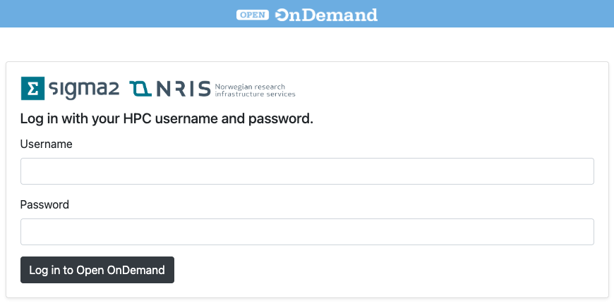
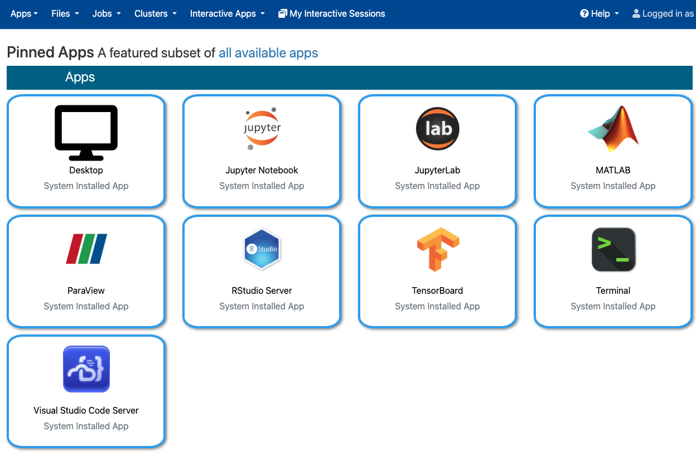
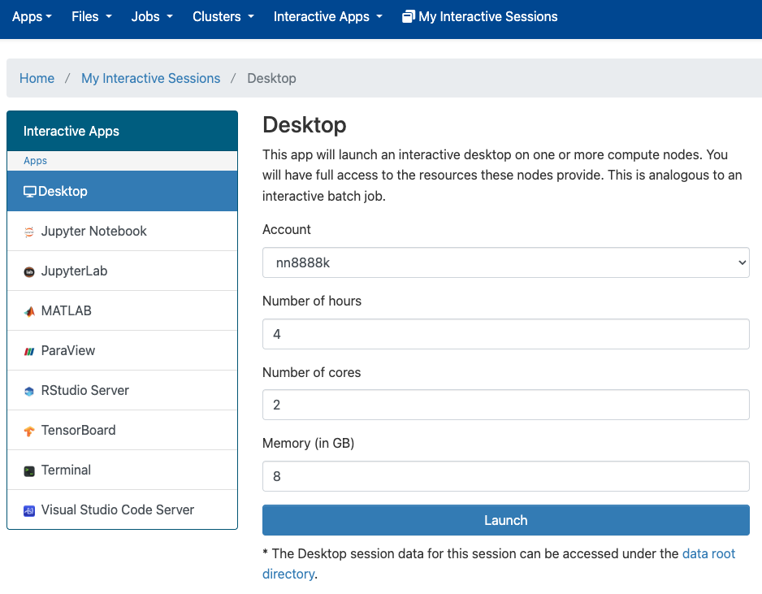
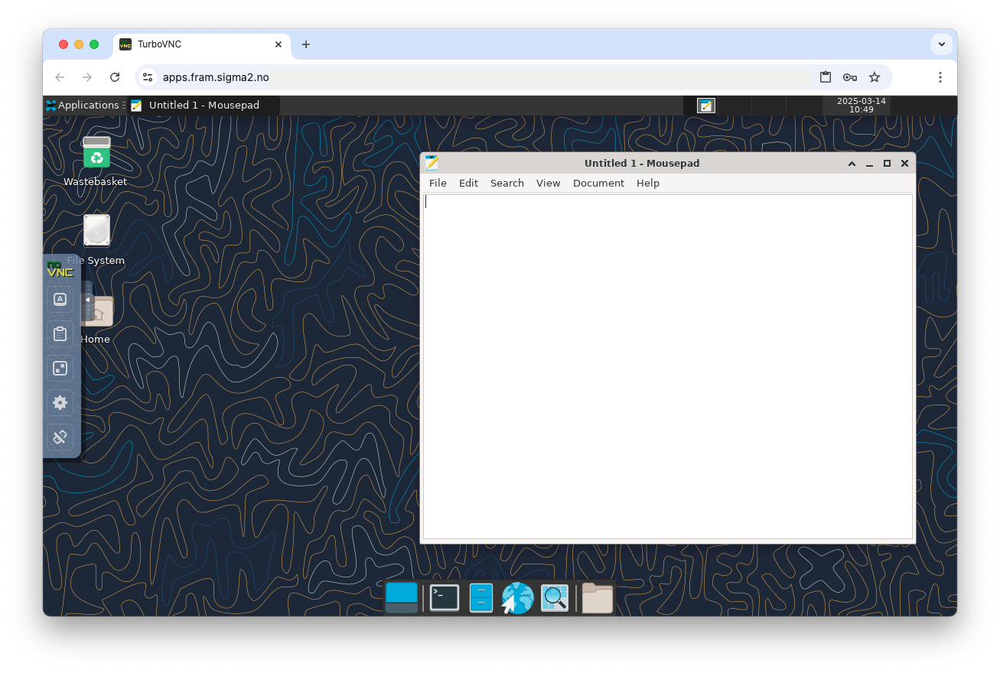

Open OnDemand
Introduction
Open OnDemand is a web interface to HPC cluster, it has multiple features to it - one is to represent a Remote Graphics solution, thus it will replace our previous RMG solutions. Open OnDemand service makes it possible to run graphical and web applications with a reasonable performance on all NRIS machines over the network.
Short video introduction: https://www.youtube.com/watch?v=uXKV-0UH39Q
Login
Open OnDemand has dedicated links for each HPC cluster:
Use your HPC username and password:

Applications
All applications are starting as Slurm jobs on compute nodes.
Currently (Apr. 2025) available applications via Open OnDemand web page:
Desktop
Jupyter Notebook
JupyterLab
MATLAB
ParaView
RStudio Server
TensorBoard
Terminal
Visual Studio Code Server

Launch application
This is example to launch Desktop application:

Select your account. How long you will run this application. How many CPU cores and memory your job needs.
Press Launch button.
Job will wait in the queue for available resources:

Status will change to Running:

It is possible to adjust Compression and Image Quality level to make application more responsive on a slow Internet connection.
Press Launch Desktop

Desktop started on compute node. Left side panel is available for additional functionality like Clipboard.